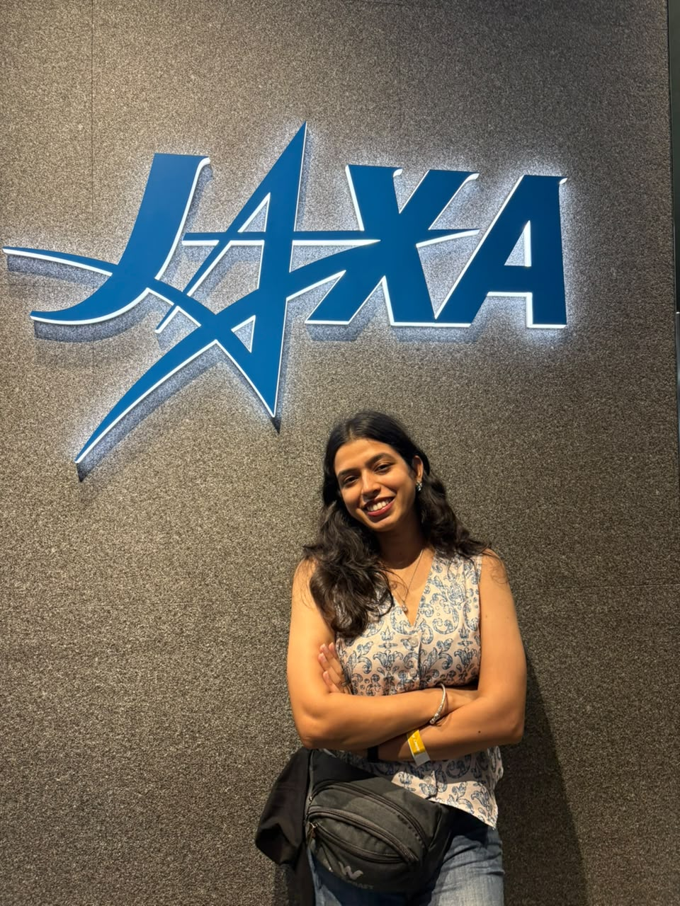
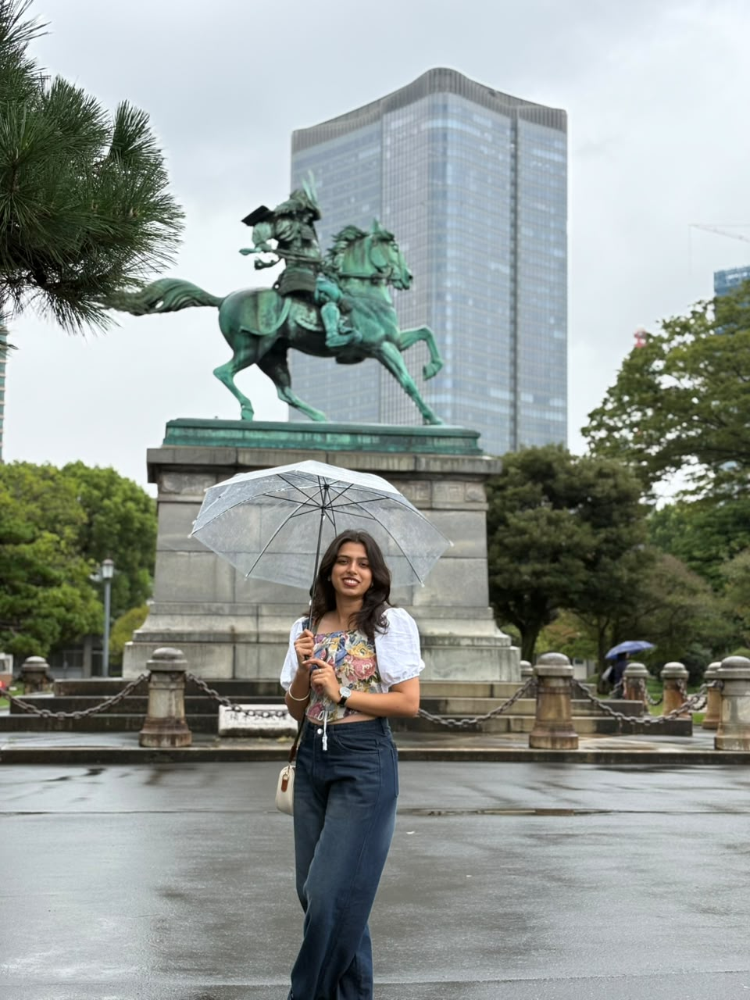
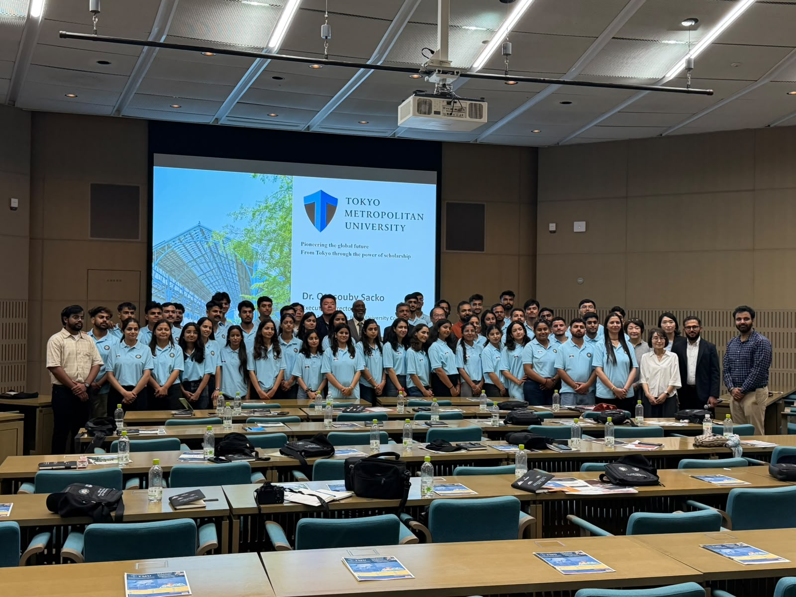
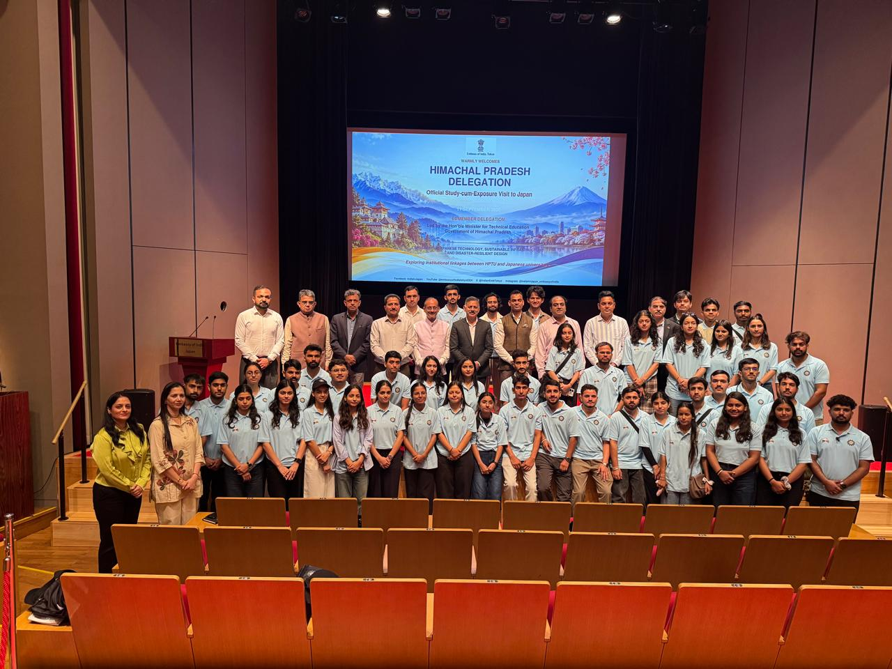
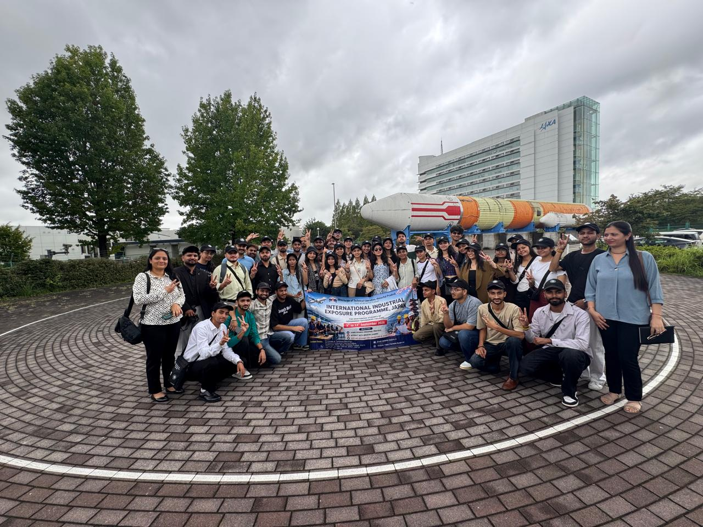
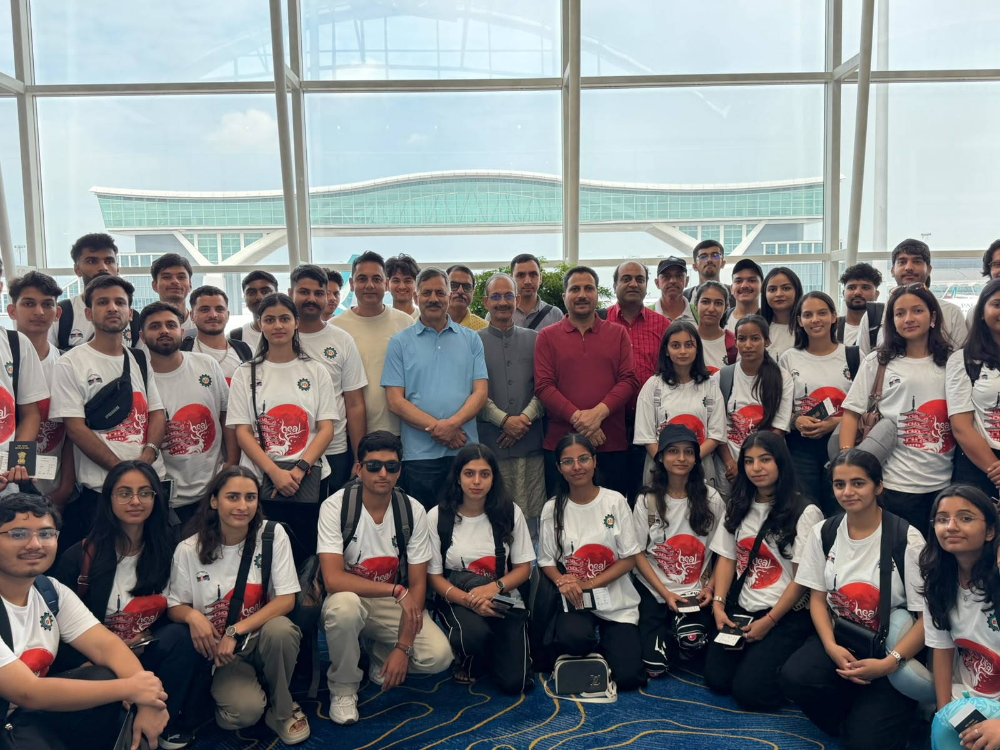

About me
I’m a B.Tech CSE (AI & ML) graduate who builds applied AI systems across LLMs, NLP and computer vision. Through three internships at the NIT Jalandhar incubator and IIT Mandi’s Centre for Artificial Intelligence and Robotics, I’ve built a multilingual voice system for children with autism, a vision-language navigation framework for robots, and a YOLO-based railway fault detector.
I like taking ideas from prototype to something that runs in real time on limited resources. I’m also a DGCA-certified remote pilot, which pairs well with my interest in robotics.
Internship journey
AI Intern · NIT Jalandhar
- Built a multilingual (Hindi, English, Punjabi) voice interaction system for a serious game for children with ASD.
- Designed a modular pipeline (NLP, TTS, scheduler agents) for adaptive session management and pacing.
- Benchmarked LLMs on latency and accuracy and chose Gemini 2.5, cutting response time by about 5 seconds.
Research Intern · IIT Mandi, CARI
- Developed a framework where agents follow natural-language instructions using LLMs.
- Tested the agent in a simulated house environment, where it completed navigation tasks successfully.
- Laid groundwork for real-robot deployment.
Research Intern · IIT Mandi, CARI
- Trained a YOLOv5 model to detect faults such as track breakage and screw defects.
- Preprocessed and augmented the labelled train/test dataset.
- Evaluated on the test set, correctly localising faults in unseen images.
Things I’ve built
Automated Interview Coach
Parses resumes, generates tailored interview questions, and gives feedback using speech and text emotion analysis.
Heart Attack Prediction System
Extracts data from medical reports via OCR and predicts risk with XGBoost on image and ECG data.
Tech stack
Languages
AI & ML
Computer Vision
Robotics
Tools
Recognition
Japan International Exposure Tour 2026
Selected among 44 students statewide by the Govt. of Himachal Pradesh: JAXA, Kyocera, space tech and robotics.
View photos →
DGCA Remote Pilot
Approved Remote Pilot Training, Adani Skill Development Centre.
View certificate →
Smart India Hackathon
Participant.
Python
IIT Bombay.
View certificate →
Deep Learning
SCEE, IIT Mandi.
View certificate →
AI & ML using Python
Miraz’24, IIT Mandi.
View certificate →
Bootcamp on Drone Technology
CARI, IIT Mandi.
View certificate →
Face Recognition using FaceNet
Udemy.
Japan International Exposure Tour 2026





